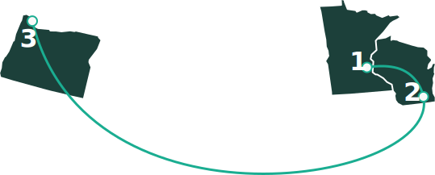

About
I’m a UX Designer focused on creating clear, intuitive digital experiences in complex environments. My work spans interaction design, systems thinking, and visual craft.
Originally from the Upper Midwest, I was born and raised in Minnesota and studied Media Arts & Game Development at the University of Wisconsin–Whitewater. Since 2016, I’ve been based in St. Helens, Oregon, where I work as a UX Designer for Jaguar Land Rover, contributing to in-vehicle infotainment systems used across global vehicle platforms.
Outside of my day-to-day work, I’m deeply involved in the local dirt track racing community as a photographer and designer. Through Tom Egan Photo, I collaborate with tracks and drivers on race promotions, driver promotions, and more—an outlet that lets me explore storytelling and visual design work in a real-world setting.
Core Skills
- UX Design: Wireframing, Information Architecture, Prototyping, User Flows, Usability Testing, Heuristic Evaluation
- Visual Design: UI Design, Poster Design
- Branding: Logo Design, Typography, Color Systems
- Motion Graphics: Animation, Visual Storytelling
- Design Systems: DesignOps, Component Libraries